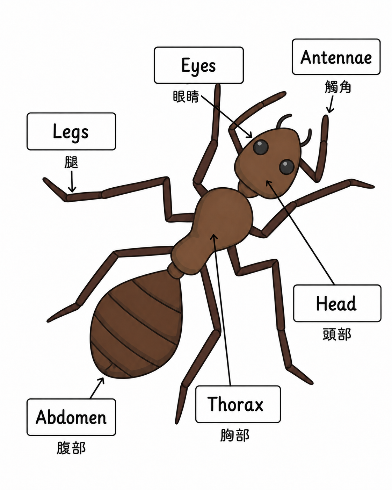

TalkBetter Week 15
Part 1 螞蟻部位
Eyes
/aɪz/
眼睛
Antennae
/ænˈtɛniː/
觸角
Head
/hɛd/
頭部
Thorax
/ˈθɔːræks/
胸部
Abdomen
/ˈæbdəmən/
腹部
Legs
/lɛgz/
腿
Part 2 三個主題句型：描述昆蟲
介紹這是什麼
Describe the ant.
描述這隻螞蟻。
This is an ant.
這是一隻螞蟻。
詢問身體部位
What body part does it have?
它有什麼身體部位？
It has six legs and antennae.
牠有六隻腳和觸角。
Ants have six legs and antennae.
螞蟻有六隻腳和觸角。
It has a head, a thorax, and an abdomen.
牠有頭、胸部和腹部。
A bee has wings and a stinger.
蜜蜂有翅膀和螫針。
Butterflies have colorful wings.
蝴蝶有彩色的翅膀。
詢問棲息地
Where does it live?
它住在哪裡？
It lives in an anthill.
牠住在蟻丘裡。
Ants live in anthills.
螞蟻住在蟻丘裡。
It lives under the ground.
牠住在地底下。
Bees live in hives.
蜜蜂住在蜂巢裡。
Spiders live in webs.
蜘蛛住在蜘蛛網上。
Part 3 故事 + 螞蟻問答
Andy the Busy Ant
Andy is a little ant. He is always busy and loves to work hard. Every day, Andy looks for food to bring back to the ant hill. He carries crumbs, seeds, and tiny leaves on his back. Andy and his ant friends work together as a team. They help each other find food and build their home. Andy feels happy when he is busy and helping his friends.
Andy 是一隻小螞蟻。牠總是很忙，而且喜歡努力工作。每天，Andy 都會去找食物，再把食物帶回蟻丘。牠會把麵包屑、種子和小葉子背在背上。Andy 和牠的螞蟻朋友們像團隊一樣一起工作。牠們彼此幫忙找食物，也一起蓋自己的家。當 Andy 很忙並且幫助朋友時，牠覺得很開心。
Question 1 螞蟻叫什麼名字？
What is the name of the ant? Answer: The name of the ant is Andy.Question 2 Andy 每天找什麼？
What does Andy look for every day? Answer: Andy looks for food every day.Question 3 他把食物帶去哪裡？
Where does Andy take the food he finds? Answer: He takes the food back to the ant hill.Part 4 文法重點：頻率副詞
Adverbs of Frequency
頻率副詞告訴我們某件事情發生的頻率有多高。
副詞
意思
頻率
always
總是
100% 一直都會發生
sometimes
有時候
50% 偶爾發生
never
從不
0% 完全不發生
Original Examples
- I never eat spiders. 我從不吃蜘蛛。
- I sometimes play soccer. 我有時候踢足球。
- I always brush my teeth. 我總是刷牙。
Ant Theme Examples
- Ants always work together. 螞蟻總是一起合作。
- Ants sometimes go inside our house. 螞蟻有時候會跑進我們家裡。
- Ants never fly like birds. 螞蟻從不像鳥一樣飛。
- I always wash my hands before I eat. 我吃飯前總是洗手。
- She sometimes sees ants on the ground. 她有時候會在地上看到螞蟻。
- We never hurt little bugs. 我們從不傷害小蟲子。
Part 5 打螞蟻學單字
Whack the Ant
點下面按鈕進入打螞蟻學單字。
開啟遊戲